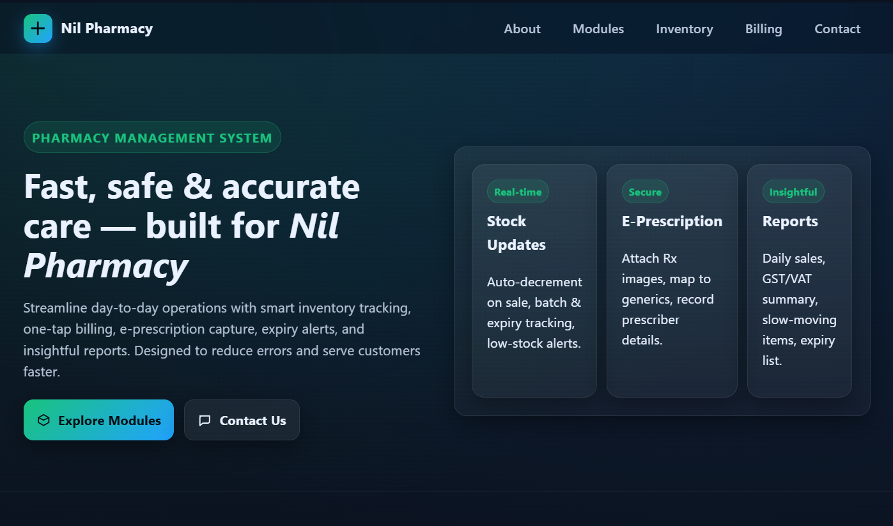
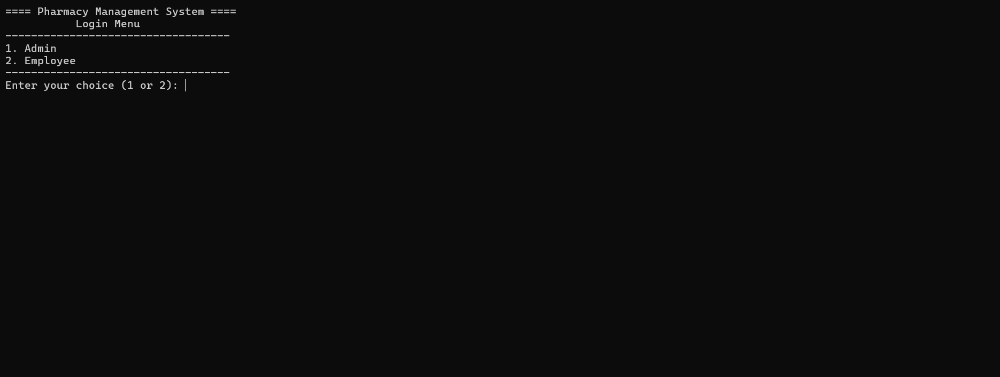

A smart NFC-based bus payment system built with NFC reader, ESP32, GPS, servo motor, and battery.
Passengers punch their NFC card when entering and leaving the bus, automatically calculating and deducting fares.
Smart Dustbin
IoT-based smart dustbin using ESP32, ultrasonic and IR sensors. It detects when the bin is full
and automatically sends an alert message to the in-charge: "Dustbin Full".
Smart Street Light
Smart lighting system with ESP32, relay, MOSFET, ultrasonic sensor, and light sensor.
Lights remain off during the day, dim at night, and switch to full brightness when motion is detected.

Pharmacy Management System
A PHP, MySQL, HTML, and CSS-based platform with admin and employee panels to register employees,
manage medicines, handle sales, and generate bills efficiently.

Super Shop Management System
A C programming-based application with features similar to the Pharmacy Management System,
designed for shop inventory, sales, and employee management.
Portfolio Website
This portfolio website is designed with HTML, CSS, and JavaScript, showcasing my projects, skills, and contact details in a modern design.